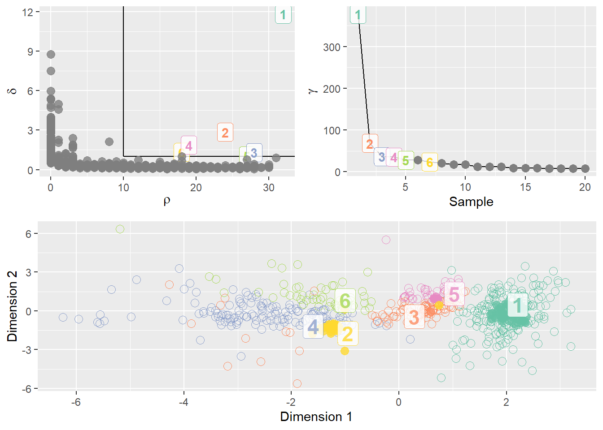
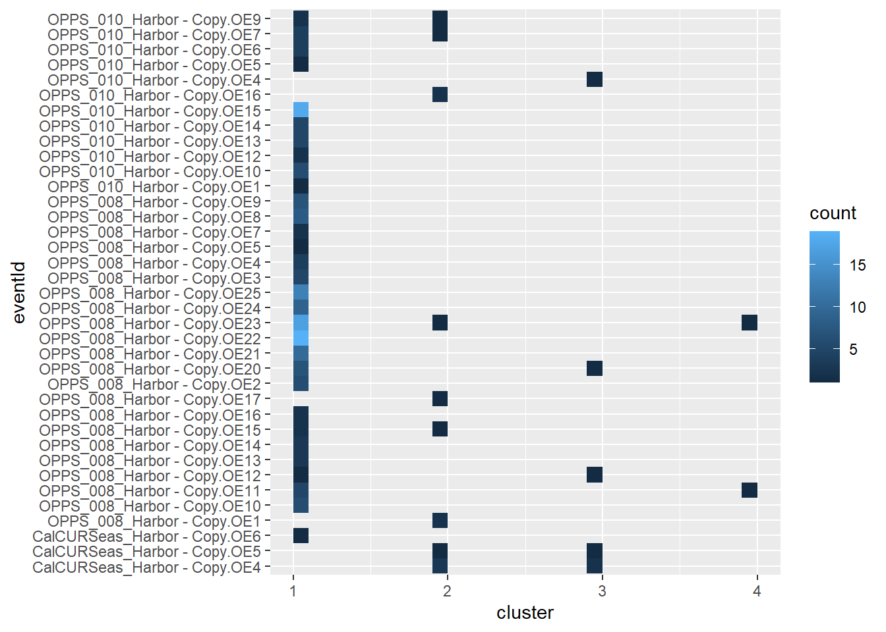
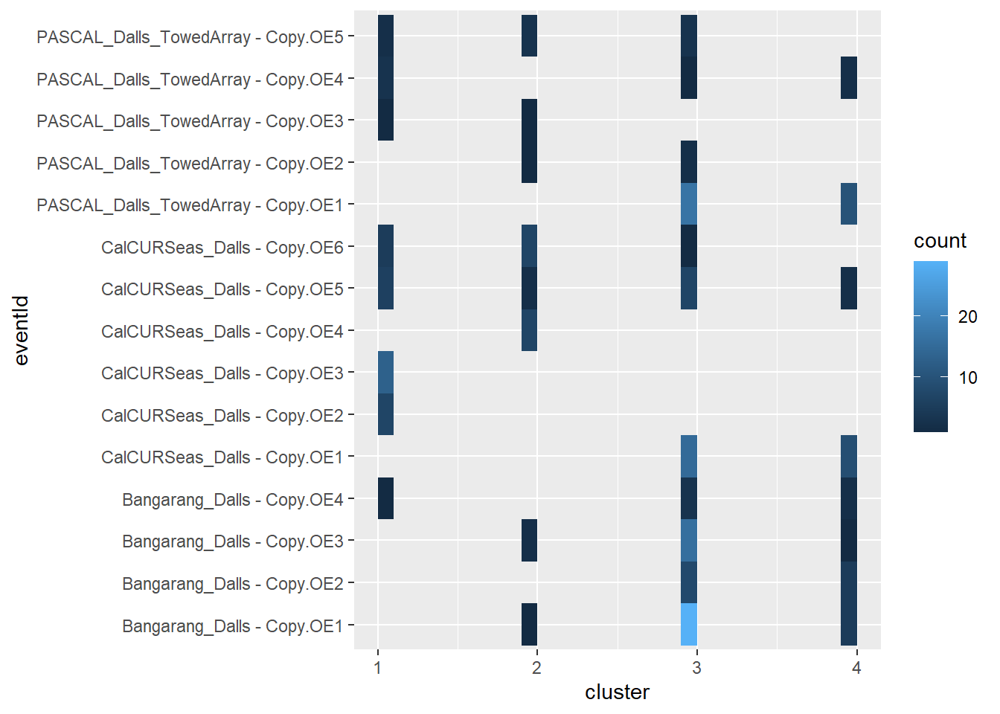
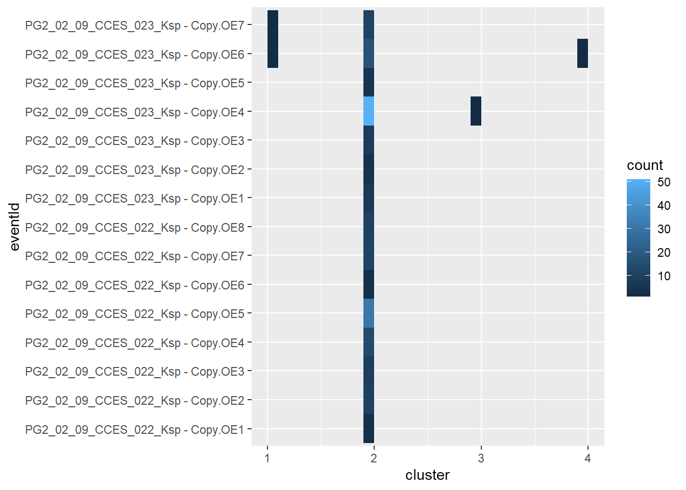
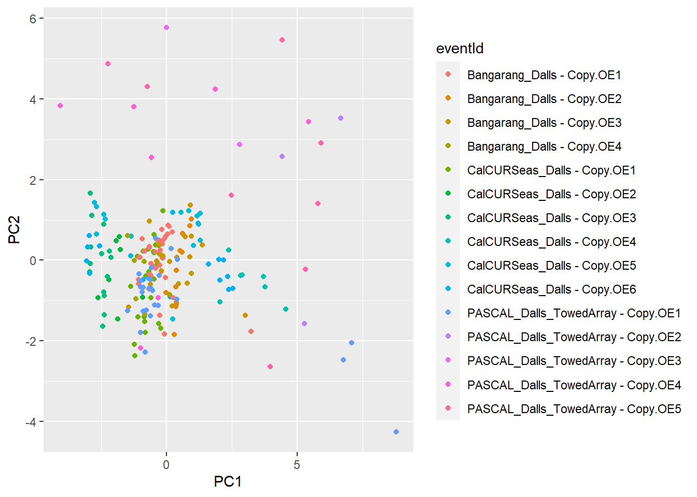

Check Up on NBHF Clusters
Intro
We want to identify clusters within our training set before we make our classifier learn from it. There are two objectives for unsupervised clustering:
- Look across species to identify whether species classes form separate clusters.
- The existence of clusters suggests that there are meaningful differences between classes that the classifier can be trained to recognize.
- Look within species classes to assess variability among events.
- The existence of clusters within an individual species class may indicate that there are outlying events with anomalous features that should be excluded from the training set.
In pursuing these objectives, we might also want to consider which observational unit we’d like to use – click or event? And would this change depending on which objective we are pursuing?
Cluster events using community dissimilarity index
Ecological communities are compared to one another by counting the different species that appear in each community and then generating a dissimilarity index using a method such as the Bray-Curtis dissimilarity.
To turn acoustic events into “communities,” I choose a variable to use for comparison, then binned the clicks based on their values. For example, if I wanted to compare events on the basis of peak frequency, I would then subdivide the region of the acoustic spectrum from 100-160 kHz to form bins of a chosen width, e.g. 1 kHz. Then, for every event, I would count clicks in each bin (see Figure 1 for an illustration of the resulting distributions)
Once the counts are available for all the events, the dissimilarity index between all events could then be generated using vegan::vegdist().
#perform binning procedure using "peak" variable
pk <- identidrift::eventbin(nbhf_clicks, peak)
#generate distance matrix
dist <- vegan::vegdist(pk, method = "bray")
#use distance matrix to perform ordination
nmds <- vegan::metaMDS(dist)The clusters are then shown in Figure 2 (a), along with plots that show clusters formed using the same procedure but with respect to different variables.


Discussion
- Events do appear to cluster broadly by class.
- To better visualize the clusters I could plot a centroid and ellipsoid, which I have seen in other plots of this type.
- This method is probably sensitive to variability in the sizes of the events, so I wonder how results would change if we implemented rarefaction or other methods to make the sample size consistent across all events being compared.
- The main drawback of this methods seems to be that clusters must be formed based on the distributions in just one dimension. I cannot conceive of how this same procedure could be applied to multi-dimensional data.
- Additionally, this is not necessarily an accepted method of clustering in this field although, in my view, there are many parallels between “events” and “communities”.
Cluster clicks using Euclidean distance
If use clicks as our observational units, then there is no need to devise a procedure or method for handling relationships at the event level.
The clusters shown in Figure 3 are created by calculating the Euclidean distances between clicks. A few steps were taken to prepare the data:
- An equal number of clicks (200) was sampled from each class to reduce the computational burden since the training set in it’s entirety has over 4,500 clicks.
- I removed some variables in order to eliminate strange artifacts in the MDS plot, which you can see developing in Figure 3 (b):
- Measurements at 10 dB (min and max freq, center freq, Q, etc.) were omitted in favor of the 3 dB measurements.
- Also, measurements of secondary and tertiary peak frequencies and resulting troughs were also ommited, since not all clicks were the same in this respect.


Discussion
- The MDS plot reveals broad separation among the species classes, similar to Figure 2.
- The fact that strange artifacts appear in the plot with all variables included (Figure 3 (b)) is puzzling.
- Does this rationalize the removal of some variables?
Cluster Clicks using densityClust
Using the data with reduced variables, the density clustering algorithm formed the clusters shown in Figure 4. The counts of each species in each of the resulting clusters is given in Table 1.
While the value of \(\delta\) was kept constant at 1, changing the value of \(\rho\) allowed me to partition the data into fewer clusters (Figure 4 (a)) or more clusters (Figure 4 (b)).


1 2 3 4
ks 4 194 1 1
pd 38 24 102 36
pp 179 13 6 2
1 2 3 4 5 6
ks 4 28 1 124 1 42
pd 38 1 102 15 36 8
pp 179 1 6 8 2 4Discussion
- The picture emerging from this cluster plot is perhaps more nuanced than that given by the previous clustering methods.
- Some interesting patterns emerge when looking at Table 1:
- When four clusters are formed, Kogia appears to have a strong affinitiy to cluster 2, and harbor porpoise to cluster 1. Dall’s porpoise has a more even distribution across all four clusters though it is represented in the highest numbers in cluster three.
- When six clusters are formed, Kogia begins to dissolve. About 2/3 of the clicks remain together in a single cluster but the rest get redistributed in separate clusters. Harbor porpoise remains overwhelmingly in cluster 1.
- Could some of this nuance be related to variation among individual events within each class?
- What is the optimal number of clusters?
Identifying anomalous events
Using the four clusters formed in Figure 4 (a), I will explode each species class into the set of all of its events and then take the sum in each cluster. These counts are shown in Figure 5. The plots are separated by species class.



Discussion
- For both Kogia and harbor porpoise, we see that clicks cluster predominately in a single cluster, 2 and 1, respectively.
- In these classes, we do not see evidence of anomalous events because, for the most part, the plots show an unbroken top-down chain. This means that all events contribute clicks into the dominant cluster.
- While there are some clicks assigned to other clusters, within these same events there are also clicks that are assigned to the dominant cluster.
- Dall’s porpoise events are more scattered across the clusters. The presence of disjoint line segments that are neither vertically or horizontally overlapping suggests that the events may split into several smaller clusters.
Follow-up
As an addendum, here are the clusters formed for the Dall’s porpoise class. The density plot suggests that algorithm strongly favors a solution of one cluster.

Distance cutoff calculated to 0.3985233 
1 2 3
Bangarang_Dalls - Copy.OE1 35 1 1
Bangarang_Dalls - Copy.OE2 9 4 0
Bangarang_Dalls - Copy.OE3 15 4 1
Bangarang_Dalls - Copy.OE4 6 0 0
CalCURSeas_Dalls - Copy.OE1 25 0 0
CalCURSeas_Dalls - Copy.OE2 7 0 0
CalCURSeas_Dalls - Copy.OE3 14 0 0
CalCURSeas_Dalls - Copy.OE4 0 0 7
CalCURSeas_Dalls - Copy.OE5 9 9 0
CalCURSeas_Dalls - Copy.OE6 6 0 7
PASCAL_Dalls_TowedArray - Copy.OE1 24 0 3
PASCAL_Dalls_TowedArray - Copy.OE2 0 0 3
PASCAL_Dalls_TowedArray - Copy.OE3 1 1 0
PASCAL_Dalls_TowedArray - Copy.OE4 5 1 1
PASCAL_Dalls_TowedArray - Copy.OE5 2 2 4